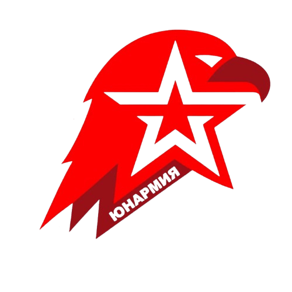

Активности
 Юнармия
Всероссийское детско-юношеское военно-патриотическое общественное движение
В нашей школе действует отряд Юнармии, который объединяет учащихся 5-9 классов, интересующихся военной историей, спортом и патриотическим воспитанием.
Направления работы:
- Строевая подготовка и дисциплина
- Изучение истории Вооружённых Сил РФ
- Участие в военно-патриотических мероприятиях и акциях
- Волонтёрская деятельность (помощь ветеранам, благоустройство мемориалов)
- Спортивно-прикладная подготовка
Фотографии и отчёты о деятельности отряда (с соблюдением ФЗ-152)
🚦 ЮИД (Юные инспекторы движения)
Отряд ЮИД МБОУ СШ № 2
Команда учащихся, занимающаяся профилактикой детского дорожно-транспортного травматизма и пропагандой безопасности дорожного движения.
Деятельность отряда:
- Изучение и пропаганда Правил дорожного движения
- Проведение профилактических мероприятий для младших школьников
- Участие в районных и областных конкурсах ЮИД
- Патрулирование около школы совместно с ГИБДД
- Создание агитационных материалов по безопасности на дорогах
Достижения: Укажите призовые места в конкурсах, благодарности от ГИБДД
🎯 Зарница 2.0
Военно-спортивная игра нового поколения
"Зарница 2.0" — современная версия классической военно-спортивной игры, дополненная элементами цифровых технологий, командной стратегии и практической подготовки по ОБЗР.
Этапы игры:
- Строевая подготовка: Оценка строевых приёмов команды
- Медицинская подготовка: Оказание первой помощи в условиях игры
- Военная топография: Ориентирование с использованием карт и компаса
- Тактическая подготовка: Командная игра по захвату флага, оборона позиций
- Полоса препятствий: Физическая подготовка и выносливость
- Киберполигон (новинка!): Задания на информационную безопасность
Результаты: Укажите место команды школы в районных/областных соревнованиях
🏆 Олимпиады по ОБЗР
Подготовка к олимпиадам и результаты участия
Учащиеся нашей школы ежегодно принимают участие во Всероссийской олимпиаде школьников по ОБЗР (бывший ОБЖ) на школьном, муниципальном и региональном уровнях.
Система подготовки:
- Индивидуальные консультации для участников
- Решение олимпиадных задач прошлых лет
- Практические тренинги по оказанию первой помощи
- Изучение расширенной программы ОБЗР
- Тестирование в условиях, приближенных к олимпиадным
Результаты 2025-2026 учебного года:
Школьный этап:
- Участников: [количество]
- Победителей и призёров: [количество]
Муниципальный этап:
- Участников: [количество]
- Призовые места: [ФИО обезличенно, класс, место]
Результаты прошлых лет:
Школьный этап:
- Участников: [количество]
- Победителей и призёров: [количество]
Муниципальный этап:
- Участников: [количество]
- Призовые места: [ФИО обезличенно, класс, место]
🏕️ Учебно-полевые сборы
Программа учебных сборов 2025-2026
Сборы для 10 класса (5 дней):
- Строевая подготовка
- Огневая подготовка (учебное оружие)
- Тактическая подготовка
- Физическая подготовка
- Военная топография
Сборы для 8 класса (3 дня):
- Основы строевой подготовки
- Ориентирование на местности
- Первая помощь в полевых условиях
- Командная работа
Результаты сборов
Здесь можно разместить отчёты о проведённых сборах, фотографии (с размытыми лицами или без лиц по ФЗ-152), отзывы участников.
🔥 Гражданская оборона и ЧС
Учебные тревоги и эвакуации
- Плановые учебные эвакуации (2 раза в год)
- Тренировки по действиям при пожаре
- Отработка действий при угрозе теракта
- Учения с участием МЧС
Обучение населения
Организация занятий для педагогического коллектива и технического персонала школы по темам:
- Действия при ЧС природного и техногенного характера
- Правила пожарной безопасности
- Оказание первой помощи
- Средства индивидуальной защиты
🤝 Взаимодействие с партнёрами
Совместная работа с организациями
- Военкомат: Организация учебных сборов, встречи с призывниками
- МЧС: Учебные занятия, демонстрация техники и оборудования
- ГИБДД: Профилактика ДТП, изучение ПДД, работа с отрядом ЮИД
- Полиция: Профилактика правонарушений, кибербезопасность
- Центр медицины катастроф: Обучение первой помощи
- Юнармия (штаб): Координация деятельности юнармейского отряда